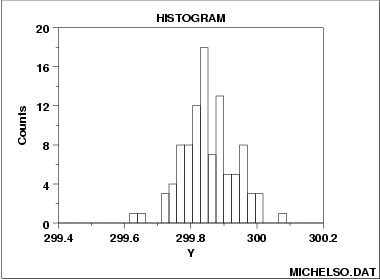

|
1.
Exploratory Data Analysis
1.3. EDA Techniques 1.3.3. Graphical Techniques: Alphabetic
|
|||
| Purpose: Summarize a Univariate Data Set |
The purpose of a histogram
(Chambers)
is to graphically summarize the distribution of a univariate
data set.
The histogram graphically shows the following:
These features provide strong indications of the proper distributional model for the data. The probability plot or a goodness-of-fit test can be used to verify the distributional model. The examples section shows the appearance of a number of common features revealed by histograms. |
||
| Sample Plot |  | ||
| Definition |
The most common form of the histogram is obtained by splitting
the range of the data into equal-sized bins (called classes).
Then for each bin, the number of points from the data set that
fall into each bin are counted. That is
The cumulative histogram is a variation of the histogram in which the vertical axis gives not just the counts for a single bin, but rather gives the counts for that bin plus all bins for smaller values of the response variable. Both the histogram and cumulative histogram have an additional variant whereby the counts are replaced by the normalized counts. The names for these variants are the relative histogram and the relative cumulative histogram. There are two common ways to normalize the counts.
|
||
| Questions |
The histogram can be used to answer the following questions:
|
||
| Examples | |||
| Related Techniques |
Box plot Probability plot The techniques below are not discussed in the Handbook. However, they are similar in purpose to the histogram. Additional information on them is contained in the Chambers and Scott references.
Frequency Plot |
||
| Case Study | The histogram is demonstrated in the heat flow meter data case study. | ||
| Software | Histograms are available in most general purpose statistical software programs. They are also supported in most general purpose charting, spreadsheet, and business graphics programs. | ||